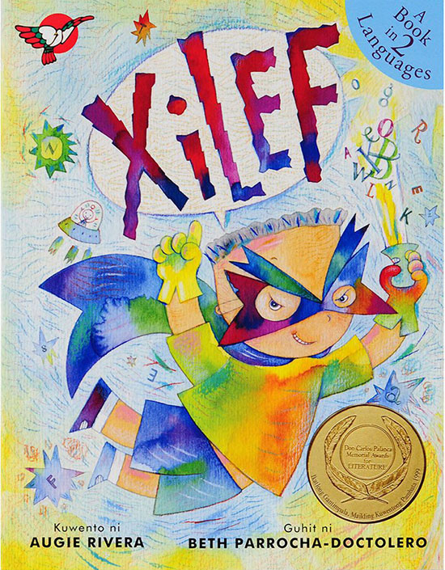
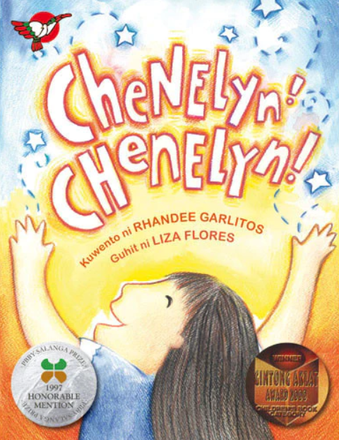
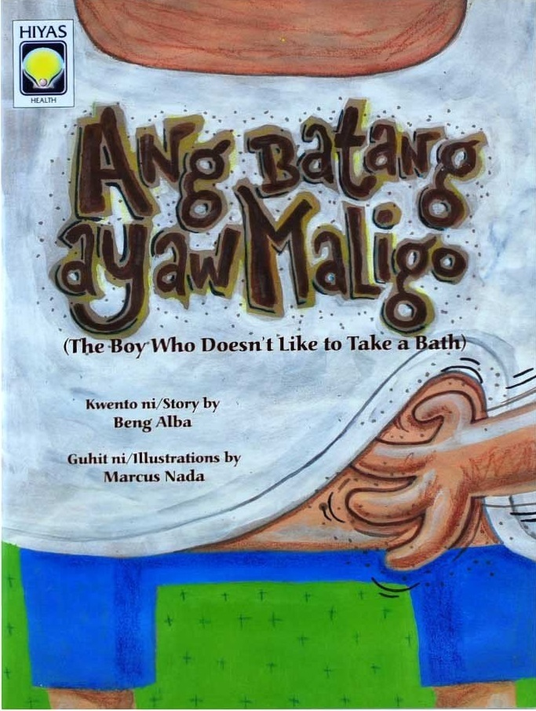
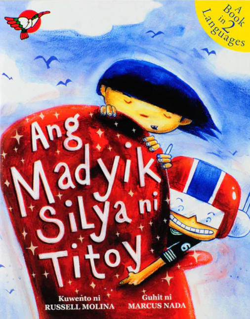
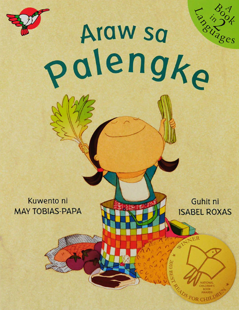

| Title | Book Cover | Description | 1) XiLEF by Augie Rivera Published: 2000 |
 | A short story about a young boy who has problems reading words, as he has dyslexia. It promotes the understanding and the acceptance of children who suffers dyslexia. | 2) Chenelyn! Chenelyn! by Randee Garlitos Published: 1999 |
 | This short story talks about our "kasambahays" or housekeepers and what are the possible events that will happen if they are not there. It helps us appreciate the people who take care of our houses and reminds us to always show respect to them. | 3) Ang batang ayaw maligo by Beng Alba Published: 2003 |
 | A short story that talks about a kid who is rather lazy to take a bath, and throughout the days that he didn't take a shower or cleaned himself it affects him in a certain way. After this, he learned his lesson on why taking a bath is very important. | 4) Ang Madyik Silya ni Titoy by Russell Molina Published: 2002 |
 | This short story talks about a little boy who can't walk, although his chair brings him to amazing places, thanks to his good imagination. | 5) Araw sa Palengke Published: 2002 |
 | A short story that is about a kid who goes to the "palengke" or market with her mom, it focuses on her adventure and the things she sees and the people meets. |
|---|